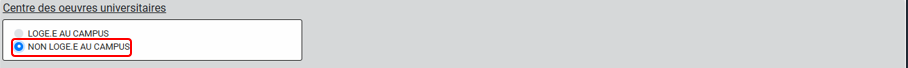

Le but principal de ces inscriptions est de stocker les
informations essentielles des étudiants dans une base de données de l'Université afin de
facilité la gestion estudiantine dans l'avenir. Merci d'y
insérer des
informations
correctes car ces dernières vous suivront tout au long de votre cursus
universitaire à l'USTM.
Ce document a pour but d'indiquer à l'étudiant comment exercer
son
inscription de manière correcte et optimale. Soyez concentrés et n'hésitez pas à
contacter
les numéros en bas de l'écran ou de page pour vous apporter plus amples informations.
BONNE INSCRIPTION !
Comment s'inscrire
Les inscriptions à l'Université des Sciences et Techniques de
Masuku se font en ligne. Pour cela, il faut suivre les étapes suivantes:
Etape 1: Inscription en ligne
Avant de vous inscrire, vous devez faire une inscription en
ligne
sur le site de l'Université des Sciences et Techniques de Masuku. Pour cela, cliquez sur
le
lien suivant: S'inscrire à
l'USTM
Après avoir cliqué sur le lien, si les inscriptions ne sont
pas
ouvertes vous serez redirigé vers la page ci-dessous.
Page d'inscription non
disponible
Une fois les inscriptions ouvertes, vous serez redirigé vers
cette
page où vous devrez cliquer sur l'onglet Inscription
Page d'inscription principale
NB: Pour ce tutoriel, nous avons procédé
dans le
cas de l'inscription à l'EPM (Ecole Polytechnique de Masuku).
Etape 1.1: Sélection de
l'établissement
Une fois sur la page d'inscription, vous devez sélectionner
l'établissement pour lequel vous souhaitez vous inscrire. Choisissez l'établissement
approprié en cliquant dessus.
Etape 1.2: Sélection de la
section (Département)
Suite à la sélection de l'établissement, tous les départements
de
l'Ecole Polytechnique de Masuku sont alors dévoilés :
Sélection du département
Vous devez alors choisir le département dans lequel vous
souhaitez
vous inscrire en cliquant dessus.
Etape 1.3: Sélection du
niveau
d'étude
Une fois le département choisi, vous devez sélectionner le
niveau
d'étude pour lequel vous souhaitez vous inscrire. Choisissez le niveau d'étude approprié
en
cliquant dessus.
Sélection du niveau d'étude
Une fois terminé, nous passons à l'Etape 2
Etape 2: Remplir le
formulaire
d'inscription
Une fois les informations d'établissement, de département et
de
niveau renseignées, vous êtes redirigé vers le formulaire d'inscription.
Etape 2.1: Téléversement de
l'image
Vous devez téléverser une image de vous en cliquant sur
l'icône de
l'image et en sélectionnant l'image de votre choix (la taille
de
l'image ne doit pas dépasser 2Mo).
Téléversement de la photo
d'identité
Etape 2.2: Renseignement d'un
matricule
Deux possibilités vous sont offertes :
Si vous êtes ancien dans l'établissement, cliquez OUI
et
écrivez votre matricule en un seul mot sans espaces et continuez de remplir les
informations.
Section pour anciens
étudiants
Si vous êtes nouveau dans l'établissement, (même si vous êtes ancien/ancienne à l'USTM, si vous
êtes
nouveau/nouvelle dans un établissement) il est évident que vous
n'avez
pas de matricule affilié à cet établissement. Donc cliquez NON et continuez de
remplir les informations.
Section pour nouveaux
étudiants
Etape 2.3: Identité de
l'étudiant
Vous devez renseigner les informations suivantes:
Informations personnelles de
l'étudiant
Etape 2.4: Établissement
sollicité
Ces informations ont été renseignées plus haut donc laissez
comme
tel.
Informations sur
l'établissement
Etape 2.5: Informations
supplémentaires
Si vous êtes salarié(e), cliquez sur
SALARIE.E et écrivez le nom et le prénom de votre employeur et
continuez de remplir les informations.
Section pour
étudiants
salariés
Si vous n'êtes pas salarié(e), cliquez NON
SALARIE.E et continuez de remplir les informations.
Section pour
étudiants
non salariés
Si vous résidez au campus, vous cliquez dessus et
normalement vous aurez la possibilité d'indiquer le BATIMENT et le NUMERO DE
CHAMBRE.
Section logement sur
campus
Sinon, cliquez NON LOGE·E AU CAMPUS.

Section non logé sur
campus
Si vous êtes boursier(e), renseignez votre numéro de
bourse. Sinon laissez le champ vide.
Section bourse
étudiante
Même principe pour le mode d'admission à l'USTM : Si
vous
avez passé le Baccalauréat juste avant d'arriver à l'université, cliquez sur
Baccalauréat (même si vous avez fait le concours de l'INSAB ou de l'EPM avant le
bac).
Mode d'admission -
Baccalauréat
Sinon, cliquez sur Examen spécial.
Mode d'admission -
Examen
spécial
Etape 2.6: Informations
complémentaires
Attention !!! les numéros de
téléphones doivent être inscrits au format +241XXXXXXXX
Informations complémentaires
Etape 2.7: Soumission du
formulaire
Après avoir pris le temps de remplir soigneusement vos
informations, vous devez cocher la déclaration sur l'honneur (le petit carré vert), qui
stipule que toute déclaration fausse entraine l'annulation de votre inscription. Donc
faîtes
preuve de responsabilité.
Ensuite vous soumettez vos informations en cliquant sur
SOUMETTRE
Soumission du formulaire
Après avoir soumis, s'il y a des erreurs (comme un numéro de
téléphone avec des lettres par exemple) elles vous seront indiquées après avoir soumis.
Exemple d'erreur de saisie
Vous devez alors corriger ces erreurs et soumettre à nouveau.
Une
fois que tout est correct, vous serez redirigé vers une page de confirmation, vous
relisez
vos informations au cas où vous aurez omis certains détails.
Page de confirmation des
informations
Si vous avez oublié quelque chose, vous avez l'opportunité de
modifier en cliquant sur MODIFIER ou de valider votre
fiche en cliquant sur VALIDER.
Options de
modification/validation
Une fois le formulaire validé, nous vous attribuons un Numéro d'inscrit. Ce numéro, tout le monde l'aura, que
vous
ayez un matricule ou pas. Le Numéro permet à l'administration de faire les
statistiques pour connaitre le nombre d'étudiants inscrits à l'université depuis X
années.
Affichage du numéro d'inscrit
IMPORTANT:
Tout en dessous de la fiche vous aurez un bouton qui se
fera
remarquer :
Bouton d'informations
importantes
Cliquez dessus ! , il vous donnera des informations
importantes à retenir pour la suite de l'inscription
! Le numéro d'inscrit et le téléphone du tuteur.
Informations importantes
à
conserver
Etape 3: Suivi de la fiche
Après avoir validé votre fiche, vous devez suivre votre fiche
pour
voir si elle a été validée par l'administration. Une fois vous aurez mémorisé ou fait
votre
capture d'écran, cliquez sur RETOUR ACCUEIL
Vous écrivez sur la barre de recherche votre numéro d'inscrit.
Ici
c'est notre étudiant qui a le numéro 10874. Ensuite automatiquement vous avez l'état du
suivi de votre fiche.
A ce niveau nous vous conseillons de vérifier chaque
jour
votre pour savoir si votre fiche a été validée ou pas.
En cas de rejet, le motif vous sera donné par votre
établissement.
Exemple de fiche
rejetée
Si vous voyez cette barre rouge, lisez l'information
que
l'établissement vous demande.
S'il vous est demandé d'aller au niveau de
votre
établissement allez-y.
S'il vous est demandé de changer quelques
informations de votre fiche (ici dans l'exemple c'est le matricule),
dans ce
cas cliquez sur Etudiant
Option pour
modifier la fiche
Ensuite vous validez. Vous aurez alors accès à
votre espace étudiant personnel. Ici, vous avez alors la possibilité de
changer vos informations rejetées et les soumettre.
Espace de
modification de la fiche
Notre étudiant a alors modifié l'information
demandée par l'établissement.
Fiche après
modification
Une fois l'opération effectuée, vous aurez
cette
phrase dans votre espace étudiant.
Confirmation
de
modification
Notre étudiant continue alors sa routine journalière
qui
est de vérifier si l'établissement a validé sa fiche d'informations.
Suivi de l'état de la
fiche
Si votre fiche est validée, vous aurez un message de
confirmation.
Fiche validée par
l'administration
Super ! En vérifiant son numéro d'inscrit, il remarque
qu'elle a été validée.
Vous devez, à cette étape, aller physiquement dans votre
établissement (ou département, c'est selon) pour récupérer votre fiche qui aura le
cachet de votre établissement. Bravo ! vous disposez désormais d'une inscription
pédagogique validée par votre établissement. Celle-ci vous permettra désormais
d'aller à
la scolarité, la présenter afin de payer vos frais d'inscriptions.
Une fois que vous avez payé au niveau de la scolarité, nous
vous
conseillons vivement de vérifier immédiatement sur la
recherche si vous voyez le message ci-dessous (avec le fond vert).
Inscription complètement
validée
Si vous voyez ce message, c'est que vous êtes officiellement
inscrit(e) à l'USTM. Vous pouvez alors commencer à suivre les cours.
Etape 4: Paiement des frais
d'inscription
Après la validation de votre fiche, vous devez payer les frais
d'inscription. Pour cela, vous devez vous rendre à la banque muni d'une photocopie de
votre
fiche circuit pour payer les frais d'inscription qui sont de 35000
XFA. Vous devez payer les frais d'inscription
dans
un délai de 15 jours après la validation de votre fiche. Si vous ne payez pas les frais
d'inscription dans ce délai, votre fiche sera annulée et vous devrez recommencer la
procédure d'inscription.
Etape 5: Finalisation de
l'inscription
Vous pouvez enfin, depuis chez vous, retourner dans votre
espace
étudiant.
Accès à l'espace étudiant
Vous cliquez sur VOIR LA FICHE pour voir votre nouvelle fiche
avec
votre mail de l'université.Attention : le mail est généré
lors de
l'inscription mais il n'est pas pour autant opérationnel. Il vous faut contacter
l'administrateur du site USTM pour l'activer. Ce dernier ne le fera que sur
présentation
de votre carte d'étudiant. Vous aurez alors accès à votre fiche
d'inscription.
Vous pouvez alors la télécharger et l'imprimer.
Fiche étudiante complète
Etape 5.1: Validation finale de
l'inscription
Après avoir payé les frais d'inscription, vous devez vous
rendre
au secrétariat pour valider votre inscription. Vous devez apporter les documents
suivants:
Votre fiche circuit
Votre fiche pédagogique
Une copie légalisée de votre acte de naissance
Une copie légalisée de votre attestation de réussite